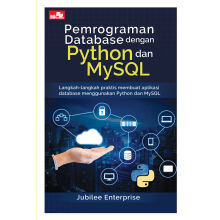
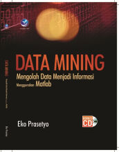
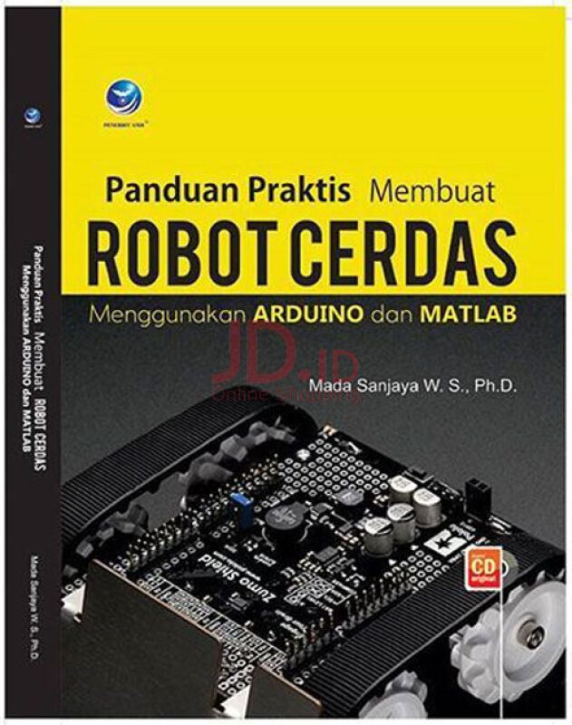

Daftar Buku-Buku Terbaru
1. Pemrograman Database dengan Phyton dan MySQL

Description : Python adalah bahasa pemrograman yang paling populer di dunia saat ini, sedangkan MySQL adalah platform database paling banyak digunakan di seluruh dunia. Apa jadinya jika keduanya digabung untuk membuat aplikasi database? Buku ini mengajarkan kepada para pembaca bagaimana membuat aplikasi menggunakan Python yang didukung oleh database MySQL. Anda akan belajar dari nol tentang bagaimana menyiapkan berbagai perangkat lunak hingga membuat database baru.Selanjutnya, pembahasan akan dimulai dari pembuatan tabel, memasukkan, meng-update, dan menghapus data, hingga menampilkan isi tabel ke dalam jendela browser. Jika Anda tertarik mengembangkan aplikasi dengan menggunakan Python dan MySQL, maka Anda wajib membaca buku ini. Apabila Anda adalah developer website yang ingin membuat situs interaktif, maka buku ini merupakan investasi pengetahuan jangka panjang..2. Data Mining Mengolah Data Menjadi Informasi

Sinopsis Meskipun riset ilmu data mining masih terbilang muda, tetapi penerapan dan manfaat yang di dapat sangat luas dan besar. Bidang-bidang seperti bisnis , medis, pendidikan, astronomi, meteorology, dan sebagainya merupakan bidang-bidang yang sangat membutuhkan data mining. Jumlah data yang besar sebagai hasil transaksi dari waktu ke waktu menjadi alasan untuk membongkar informasi apa yang dapat dibuka dari bongkahan data yang begitu besar. Karena biaya perawatan rutin dikelurkan, maka akan menjadi sebuah kerugian jika data tersebut hanya disimpan dan tidak diolah untuk mendapatkan informasi yang berguna demi kemajuan instansi. Untuk itulah buku ini dibuat agar menjadi panduan yang jelas,lengkap, sistematis, disertai contoh aplikasi MATLAB yang mudah pula untuk diikuti. Buku ini dapat menjadi penambah dan penyempurna secara komprehensif buku karya penulis sebelumnya, yaitu Data Mining Konsep dan Aplikasi Menggunakan MATLAB.3. Panduan Praktis Membuat Robot Cerdas

Ukuran⁄Halaman: 20x28 cm² ⁄ xiv+482 halaman Edisi⁄Cetakan: I, 1st Published Tahun Terbit: 2016 Sinopsis Buku robotika Arduino ini tidak menjelaskan teori yang berat tetapi menjelaskan metode praktis untuk membangun robot cerdas. Buku ini dilengkapi dengan CD yang berisi simulasi Arduino menggunakan Proteus dan pemrograman soft computing MATLAB..DAFTAR BUKU MATA PELAJARAN,

Description : Apakah selama ini Anda masih berkutat menggunakan Ms Office 2016 hanya untuk mengetik data? Jika jawabannya ya dan Anda kesulitan untuk mengoptimalkan Ms Office 2016 untuk beragam kepentingan? Nah, buku ini hadir untuk membongkar habis penerapan Ms Office 2016 terpopuler. Buku ini memberikan 123 contoh penerapan secara langsung penggunaan Ms Word, Excel, dan PowerPoint. Anda akan diajak untuk membuat beragam desain kartu, kalender, flyer rekreasi, brosur usaha, tagihan invoice dan beragam contoh kasus penerapan lain menggunakan Word 2016. Penerapan Excel 2016 bisa Anda coba melalui petunjuk penyusunan beragam laporan keuangan dan seluk beluk penghitungan berkaitan dengan dunia usaha, membuat ragam model data administrasi pendidikan dan perkantoran secara rapi dan cepat,menjawab soal-soal matematika dan trigonometri, pengoreksian data secara otomatis, dan lain sebagainya. Tak cukup hanya sampai di situ, aneka desain presentasi, portfolio, dan penerapan penggunaan PowerPoint 2016 pun bisa.
Description : Buku ini membahas tentang bagaimana melakukan teknik audit dengan menggunakan software Microsoft Excel, ACL versi 9, dan IDEA versi 10. Bahasan buku ini meliputi bagaimana mengakses data dari berbagai jenis file database ke Excel, ACL, dan IDEA. Buku ini juga membahas tentang bagaimana melakukan analisis data untuk tujuan audit, meliputi analisis statistik, analisis profile data, analisis stratifikasi, analisis umur, analisis gap dan duplikat, analisis benford law, dan teknik sampling.
Sinopsis Buku ini sangat cocok bagi anda yang ingin memulai mencoba menggunakan database Oracle, karena di dalam buku ini akan dijelaskan cara memasang Oracle Database 12c pada PC atau laptop anda, serta query- query SQL dasar. Selain itu, buku ini juga dilengkapi dengan banyak contoh query yang dapat dicoba oleh pembaca. Pembaca juga diajak untuk berpikir secara kritis dengan beberapa latihan percobaan. Latihan yang diberikan berupa latihan tentang teoritis dan latihan query.